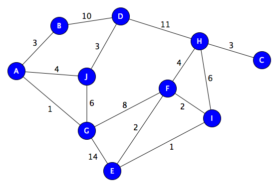

Three sections make up the CPPS: the exhibit,
the simulator, and first aid.
Large touch screens with our original mini-games
that teach visitors about earthquake causes,
effects, and preparation tips are incorporated
into the exhibit space.
Additionally, we developed a platform for a
fleet of tablets that are placed strategically
on walls throughout the museum and are each
running a variety of software. With the help of
these tablets, visitors can learn more about the
activity they are currently engaged in and have
a more engaging learning experience. Visitors
have the option to learn at their own pace and
receive guidance that is specifically suited to
their needs.
An escape game will also assist visitors in
learning as much as possible while having fun.
Finishing the game should take about an hour.
Pygmak
Battle your way through endless waves of
falling containers and redeem the precious loot
they carry for upgrades! Pygmak is an
addictive, simple, rewarding game you won't stop
going back to.
Inkwell
Blinded, you must find clever ways to find
all three keys and escape the maze with for only
tool: The ability to paint the walls
around you. The player must come up with good
spatial awareness strategies to avoid
getting lost forever.
This research project had for purpose
to help raise awareness of the
difficulties blind people have to navigate in an
environment mainly built for the
sighted and through playing, come up with real
world modifications
that could be implemented to help people
suffering from that handicap.
My bachelor focusing on the use of
audio, I wanted to create a unique experience
never seen before in virtual reality
gaming: A virtual reality navigation game based
on echolocation, where the player is
left in the dark inside
a big house hunted by a mysterious ghost-like
entity. They must navigate undetected to
locate the light-switch. The trick is that the
game uses live microphone data. Meaning
if you want to be quiet in the game, you must be
quite outside the game. This makes for a
uniquely scary and truly immersive experience.
Making this game not only taught me a lot
about sound physics in general, but how
to implement accurate FFT measurements and fine
tune settings to make an enjoyable
experience.
A
MAX MSP tool that turns any direct input
controller into a fully featured synthesizer and
sampler. All wirelessly through UDP
packages!
This
MAX patch receives and sends UDP packages to a
DualShock4 controller to control a wide
range of custom made audio effects plugins and
buffers.
It allows the user to record and playback
samples, switch to 5 different instruments and
control everything in an ergonomic design. An
enhanced version of this patch is now
available, feel free to ask me for any files or
source
code.
A
Java Minecraft plug-in made to enhance
the capabilities of the bow and arrow. Enabling
this plug-in will add a block where the
arrow lands depending on which block you are
standing on. For example, if the player is
standing on
a Redstone block, a Redstone block will be
created at the point of impact allowing the
player to connect Redstone circuits from a
distance. This plug-in is initially made
for players who like to create puzzle-based
levels
in Minecraft.
Some examples of effects:
Standing on gold: Teleports the
player to arrow's location Standing on
Redstone: Creates a Redstone block at
arrow's location Standing on Lapis: Creates
a water
block at arrow's location
Standing on Sand: Creates a Sand block at
arrow's location Arrow through Lava:
Kills the player if the arrow goes through Lava
A
mobile application meant to be strapped
onto your arm that gives you access to various
OSC panels connected to a MAX MSP patch
via Bluetooth.
AI swimming
competition

As
part of a university assignment, where
I had to code and test different types of path
finding algorithms. Once each algorithm
was built (Backtracking, Depth-first, Dijkstra
and A*), I decided to have them compete
with each other.
I thus created virtual swimming pool
where 4 contestants race to reach the end.
At each round, waypoints are scattered randomly
inside the pool and each contestant is
allocated a random starting point. I then
simulate a few hundred rounds and graph the
results to see which path algorithm
prominently won over the others. As
expected, A* ended up dominating the other 3.

.jpg)